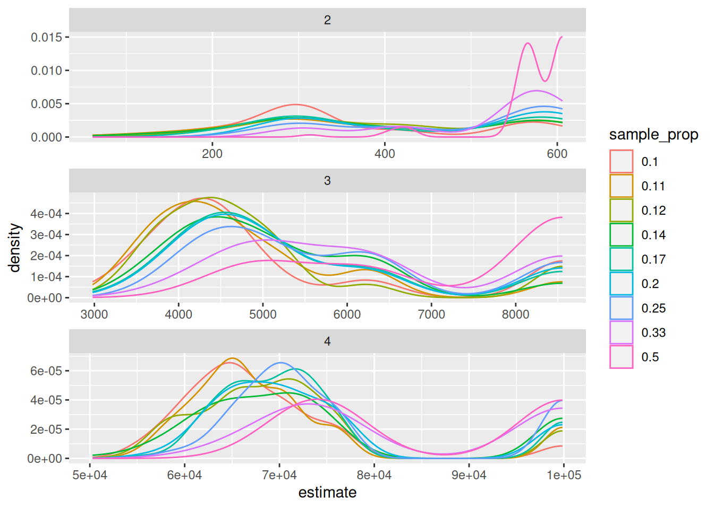
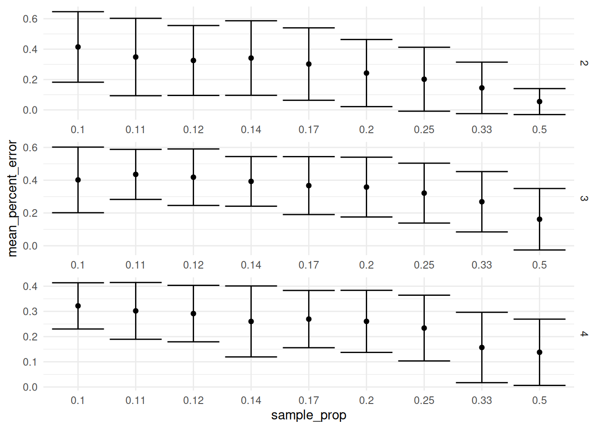
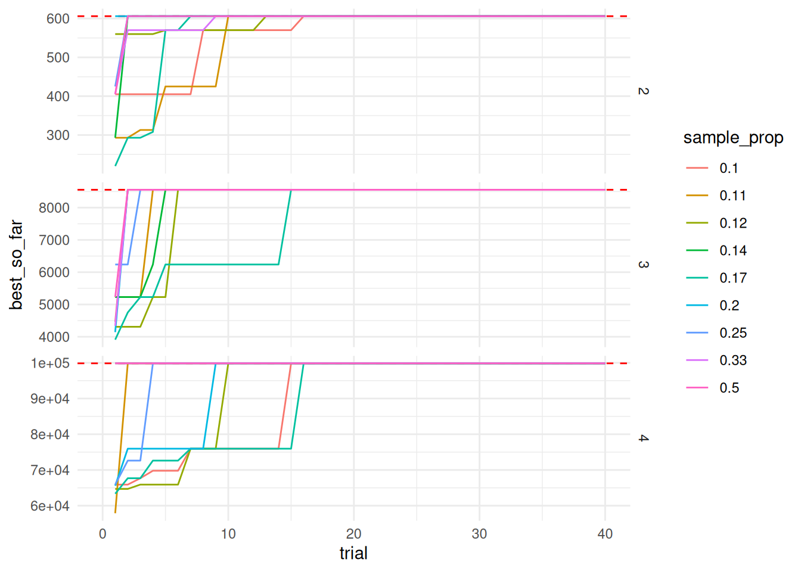
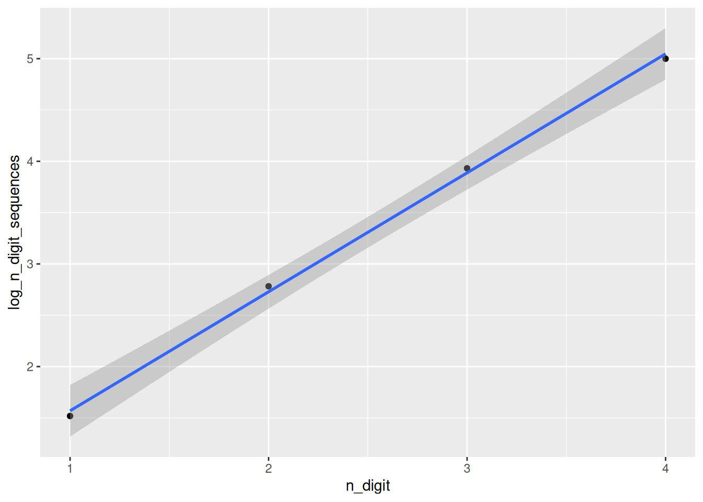

pi_digits <- tidytuesdayR::tt_load("2026-03-24")[[1]]
write_csv(pi_digits, "pi_digits.csv")Digits of Pi
TidyTuesday is a weekly data visualization challenge. The details for this week can be found here.
Introduction
I use the tidytuesdayR package to load the data the first time. Then I store it locally in a csv.
pi_digits <- read_csv("pi_digits.csv", show_col_types = FALSE) Analyzing the distribution and patterns in the digits of \(\pi\).
Estimating the number of digits needed to find an n-length subsequence
I think this calculation is interesting because it gives some measurement of the uniqueness of the subsequences. We can calculate perfect subsequence efficiency and determine the minimum number of digits needed to capture all possible subsequences, and then compare that to the actual number of digits needed to find all subsequences.
Perfect efficiency is defined by the De Bruijn sequence.
We can calculate an exact answer by searching for each subsequence in pi, and we can also estimate it using random sampling.
Let’s start with the trivial case of one digit.
pi_digits_string <- pi_digits$digit |>
paste0(collapse = "")
n_digit <- 1
DeBruijn <- 10^n_digit
unique_n_digit_sequences <- tibble(digit_combo = seq(0,DeBruijn-1), freq = 0) |>
mutate(digit_combo = sprintf(paste0("%0", n_digit,"d"), digit_combo))
i <- 0
while (any(unique_n_digit_sequences$freq == 0)) {
i <- i + 1
substring_digits <- pi_digits$digit[i:(i+n_digit-1)] |>
paste0(collapse = "")
unique_n_digit_sequences <- unique_n_digit_sequences |>
mutate(freq = ifelse(digit_combo == substring_digits, freq + 1, freq))
}
print(i)[1] 33It takes 33 digits of pi before we see every digit once. Let’s turn this into a function and calculate it for larger subsequences. Because the size of the computation will increase dramatically with additional digits, I’m also going to show the computation durations.
find_n_digit_sequences <- function(n_digit) {
start_time <- Sys.time()
DeBruijn <- 10^n_digit
unique_n_digit_sequences <- tibble(digit_combo = seq(0,DeBruijn-1), freq = 0) |>
mutate(digit_combo = sprintf(paste0("%0", n_digit,"d"), digit_combo))
i <- 0
while (any(unique_n_digit_sequences$freq == 0)) {
i <- i + 1
substring_digits <- pi_digits$digit[i:(i+n_digit-1)] |>
paste0(collapse = "")
unique_n_digit_sequences <- unique_n_digit_sequences |>
mutate(freq = ifelse(digit_combo == substring_digits, freq + 1, freq))
}
end_time <- Sys.time()
print(end_time - start_time)
return(i)
}
n_digit_sequences <- tibble(n_digit = 1:4) |>
mutate(n_digit_sequences = map_dbl(n_digit, find_n_digit_sequences))
n_digit_sequences |>
mutate(comp_duration = c(0.04, 0.64, 9.23, 134.91)) |>
write_csv("n_digit_sequences.csv")n_digit_sequences <- read_csv("n_digit_sequences.csv", show_col_types = FALSE)
knitr::kable(n_digit_sequences, digits = 2)| n_digit | n_digit_sequences | comp_duration |
|---|---|---|
| 1 | 33 | 0.04 |
| 2 | 606 | 0.64 |
| 3 | 8554 | 9.23 |
| 4 | 99847 | 134.91 |
Clearly computational time gets out of hand quickly, but an exact answer for something like this doesn’t have to be our goal. There is probably a good way to estimate the answer. In our single digit example, if we took a random sample of combinations that happened to include 0, checked the position of each one, and picked the index of the combination that appeared the latest in \(\pi\), we would have arrived at the same answer in a fraction of the time. The question then becomes how large should our sample be until we get diminishing returns.
Because we’re doing random sampling, I’m also doing monte carlo simulation so that we can we eliminate the possibility of getting very lucky on a particular trial.
set.seed(42)
n_digit <- c(2:4)
n_trials <- 100
sample_prop <- c(2:10)
debruijn_estimate <- function(n_digit, sample_prop) {
print(paste0("n_digit = ", n_digit, ", sample_prop = ", sample_prop))
DeBruijn <- 10^n_digit
unique_n_digit_sequences <- tibble(digit_combo = seq(0,DeBruijn-1), location = NA) |>
mutate(digit_combo = sprintf(paste0("%0", n_digit,"d"), digit_combo))
sample <- unique_n_digit_sequences |>
slice_sample(prop = sample_prop) |>
mutate(location = map_dbl(digit_combo, ~str_locate(pi_digits_string, .x)[[1]]))
return(max(sample$location))
}
trials <- tibble(n_digit = n_digit) |>
expand_grid(sample_prop = sample_prop) |>
expand_grid(trial = 1:n_trials) |>
mutate(sample_prop = 1/sample_prop) |>
mutate(estimate = map2_dbl(n_digit, sample_prop, debruijn_estimate))
write_csv(trials, "trials.csv")trials <- read_csv("trials.csv", show_col_types = FALSE) |>
left_join(n_digit_sequences |> select(n_digit, exact_answer = n_digit_sequences), by = "n_digit") |>
mutate(sample_prop = round(sample_prop, 2)) |>
mutate(sample_prop = as.factor(sample_prop)) |>
mutate(error = estimate - exact_answer) |>
mutate(percent_error = error / exact_answer)
trials_summary <- trials |>
group_by(n_digit, sample_prop) |>
summarise(mean_estimate = mean(estimate),
sd_estimate = sd(estimate),
mean_error = mean(error),
mean_percent_error = mean(percent_error),
sd_percent_error = sd(percent_error))`summarise()` has grouped output by 'n_digit'. You can override using the
`.groups` argument. a <- trials |>
filter(n_digit ==4)
ggplot(trials, aes (x = estimate, color = sample_prop, group = sample_prop)) +
geom_density() +
facet_wrap(~n_digit, scales = "free", dir = "v") 
There are a couple interesting observations here. The first is the bimodal distribution of the estimates. One peak represents the highest estimate in the absence of the latest sequence (i.e. the sequence that would yield the correct answer) being present in the sample. And the other peak is around the exact answer. The second is more obvious, that the larger our sample, the closer we are to the exact answer and the more likely we are to actually capture the exact answer. If we are calculating based on a single trial, we can plot the percent error as a function of the sample size.
ggplot(trials_summary |> mutate(mean_percent_error = abs(mean_percent_error)), aes(x = sample_prop, y = mean_percent_error)) +
geom_point() +
geom_errorbar(aes(ymin = mean_percent_error - sd_percent_error, ymax = mean_percent_error + sd_percent_error)) +
facet_wrap(~n_digit, scales = "free", dir = "v", strip.position = "right") +
theme_minimal()
It looks like if you are doing a single trial, you will continue to benefit as you increase the sample size and we don’t really reach a point of diminishing returns all the way up to a sample proportion of 1/2.
Looking again at the density plot, there is another strategy we could use to to find the correct answer. We could do multiple trials and try to detect that second peak at the true maximum.
using the previous trials data, I’m going to plot the best so far location for each sample size and n_digit combination.
trials_best_so_far <- trials |>
group_by(n_digit, sample_prop) |>
arrange(n_digit, sample_prop, trial) |>
mutate(number_of_searches = as.numeric(trial) * as.numeric(sample_prop) * 10^n_digit) |>
mutate(best_so_far = cummax(estimate))
ggplot(trials_best_so_far, aes (x = trial, y = best_so_far, color = sample_prop, group = sample_prop)) +
geom_hline(aes(yintercept = exact_answer), color = "red", linetype = "dashed") +
geom_line() +
xlim(0, 40) +
facet_wrap(~n_digit, scales = "free_y", dir = "v", strip.position = "right") +
theme_minimal()Warning: Removed 540 rows containing missing values (`geom_line()`).
Doing a back of the envelope calculation, the number of searches needed to converge on the exact answer (sample size * number of trials) is much higher than a brute force method. However, there is the possible optimization of being able to store the result of a repeated query so you don’t have to do the more expensive search across the pi string.
Going through this exercise, I think going through the trouble of an exact solution is probably easier or similar than trying to estimate using multiple searches.
That said, going back to our exact solutions, there is an exponential pattern we can use to estimate pretty quickly how many digits we would need.
n_digit_sequences <- n_digit_sequences |>
mutate(log_n_digit_sequences = log10(n_digit_sequences))
ggplot(n_digit_sequences, aes(x = n_digit, y = log_n_digit_sequences)) +
geom_point() +
geom_smooth(method = "lm")`geom_smooth()` using formula = 'y ~ x'
model <- lm(log_n_digit_sequences ~ n_digit, data = n_digit_sequences)
summary(model)
Call:
lm(formula = log_n_digit_sequences ~ n_digit, data = n_digit_sequences)
Residuals:
1 2 3 4
-0.05078 0.05396 0.04444 -0.04761
Coefficients:
Estimate Std. Error t value Pr(>|t|)
(Intercept) 0.41008 0.08544 4.80 0.040768 *
n_digit 1.15922 0.03120 37.16 0.000723 ***
---
Signif. codes: 0 '***' 0.001 '**' 0.01 '*' 0.05 '.' 0.1 ' ' 1
Residual standard error: 0.06976 on 2 degrees of freedom
Multiple R-squared: 0.9986, Adjusted R-squared: 0.9978
F-statistic: 1381 on 1 and 2 DF, p-value: 0.0007235That looks really good. So using the equation
\[ \log(y) = 1.16x + 0.41 \]
we can approximate the number of digits of pi we need to find every single combination of n digits. This should still be tested against digit combinations longer than 4, but I’m happy to say I’ve found a pattern.